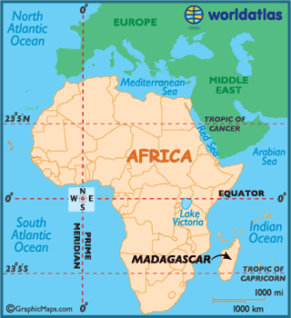

Basic Facts
The blue-eyed lemur is considered critically endangered. They were even added to the top 25 most endangered primates list. They are so rare that only 5 breed-able blue-eyed lemurs live in North America. The blue-eyed lemurs are beautiful and the males are completely black where the females are a shade of brown. These animals eat fruit, leaves and flowers, though that is not completely known since the specific blue-eyed lemurs have actually not been studien in the wild. The female lemurs may only give birth to one or two lemurs at a time which is another reason the population of blue-eyed lemurs is decreasing so drastically. These animals are very small and live around 25 years when in captivity. It is still unknown how long these animals live in the wild. These animals desperately need our help in order to not become extinct.
Where Does It Live?
The blue-eyed lemur lives in a small region Madagascar. Where they live is a subtropical moist and dry forest.
Conservation
Many things are being done to try and save this animal. Four females were even brought to the United States in order to make sure they were breed and produce as many blue-eyed lemurs as possible. These animals are hunted a lot and the area they live have wild fires often. All these factors show that many things still need to be done to save these animals.